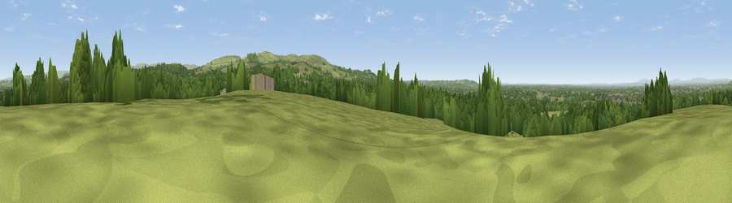

Viewpoint near High Lane
#18272 in England · top 34% of its area beats it · near High LaneThe view, rendered

A 360° render of this exact spot computed from the terrain model, tree cover and land cover — summer colours, afternoon light, calibrated against photographs of famous viewpoints. Real trees, hedges and buildings will differ in detail.
The panorama
Grey silhouette: terrain skyline in each direction (720 bearings, Earth curvature and refraction included). Dashed green: skyline with trees (+15 m) and buildings (+8 m) as obstacles. Blue strip: how far the ground is visible on each bearing.
Where the view opens
Wedge length = distance to the farthest visible ground on that bearing (vegetation-aware). Rings at 10, 25 and 50 km.
What fills the view
54% grassland · 35% woodland · 10% built-up · 1% cropland
Angular shares of the visible panorama (visual magnitude), not map area. Landscape diversity 0.43 (0–1 Shannon).
Key numbers
More beautiful places nearby
The staircase of upgrades: each row has a higher view potential than everything closer. Driving times are estimates from straight-line distance, calibrated against real road routing — check an actual route before setting out.
| Place | Direction | Drive | Score |
|---|---|---|---|
| Viewpoint near Disley | ENE · 3 km | ~7 min | 62.6 |
| Higher Moor | SE · 5 km | ~10 min | 71.1 |
| Viewpoint near Compstall | N · 8 km | ~15 min | 72.5 |
| Cats Tor | SSE · 10 km | ~20 min | 72.8 |
| Harrop Edge | NNE · 13 km | ~23 min | 74.6 |
| Wild Bank | NNE · 14 km | ~26 min | 76.2 |
| Viewpoint near Carrbrook | NNE · 16 km | ~29 min | 77.1 |
| Viewpoint near Mow Cop | SSW · 28 km | ~44 min | 78.9 |
53.35802, -2.09199 · source: screening · position refined by local search. Computed location — check access rights before visiting.